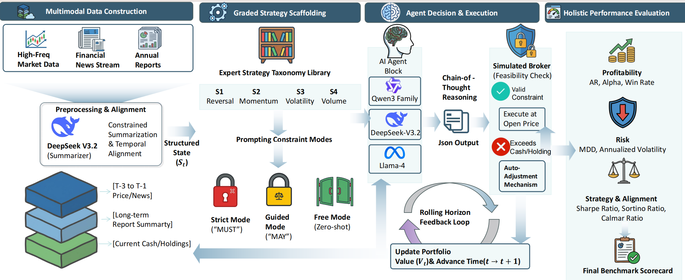
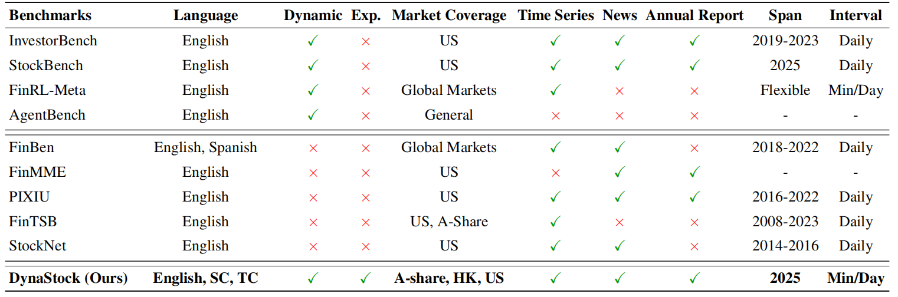
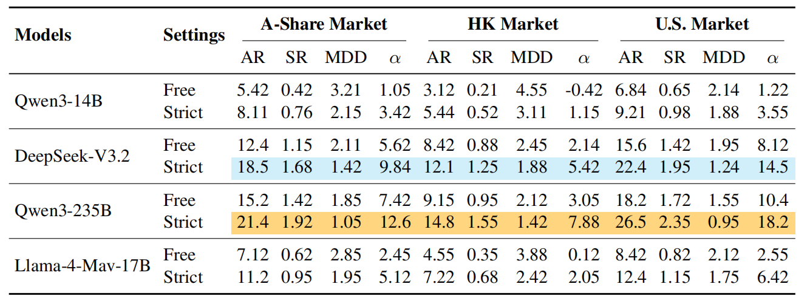
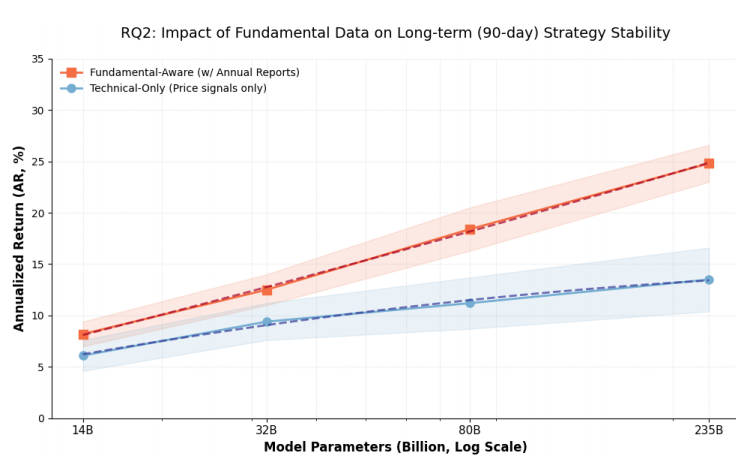
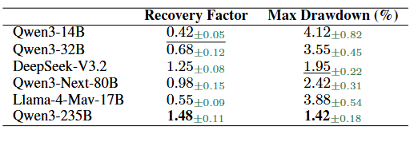

Current evaluation paradigms for financial Large Language Models (LLMs) rely heavily on static historical datasets and opaque profitability metrics, failing to capture strategic adaptability in real-world trading. This limitation conceals a critical disconnect between reported performance and practical reliability. To address this, we introduce DynaStock, a benchmark that transforms evaluation into a longitudinal auditing process. By employing a perpetual forward-testing methodology under a graded strategy scaffolding mechanism, DynaStock distinguishes between accidental profitability and genuine strategic compliance. The framework integrates multimodal data construction and closed-loop trading simulations across three major global markets to evaluate the mapping between market context and executable decisions. Extensive experiments with state-of-the-art models (ranging from 14B to 235B parameters) expose a significant capability gap: even LLMs achieving impressive results on traditional benchmarks exhibit profound deficiencies in maintaining strategic consistency under high-volatility scenarios. These findings underscore the limitations of current models as autonomous financial agents.





@article{dynastock2026,
title = {DynaStock: A Dynamic Benchmark for Strategic Adaptability of Large Language Models in Multimodal Real-World Finance},
author = {Anonymous},
journal = {Anonymous ACL submission},
year = {2026}
}